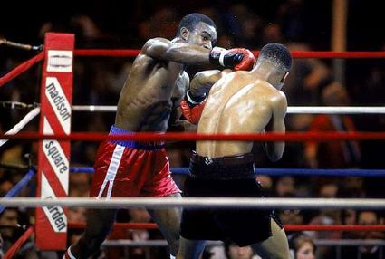
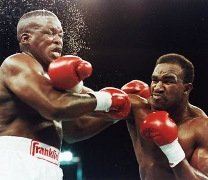
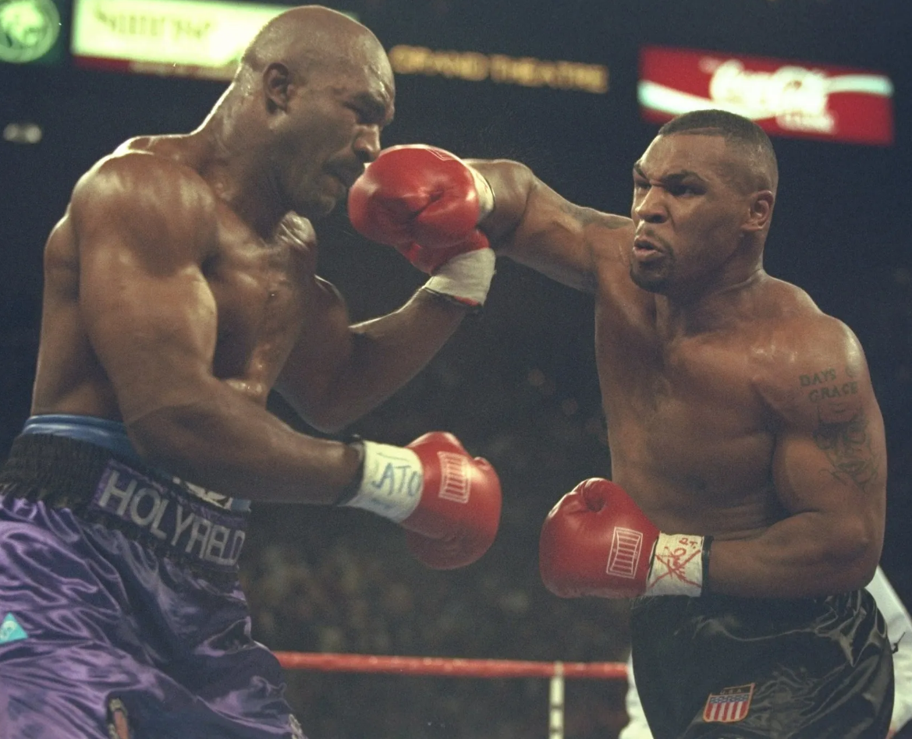
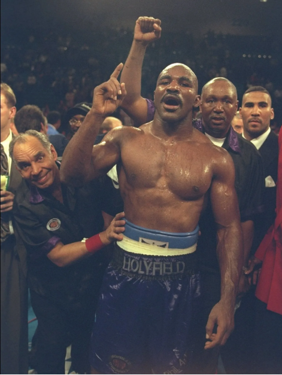

Evander Holyfield's journey into boxing began at a young age. Born in 1962 in Atmore, Alabama, Holyfield started boxing at the age of 8. His determination was evident early on, as he began training at the local gym, and by 1984, he turned professional after an outstanding amateur career. His first pro fight was a decisive win over Rickey Womack. This marked the beginning of what would become one of the most remarkable careers in heavyweight boxing history.
One of Holyfield's most memorable matches came in 1990 when he faced James "Buster" Douglas. Holyfield was the underdog going into the fight, but he delivered an incredible performance, earning a unanimous decision victory. This fight was a defining moment in Holyfield’s career, showcasing his resilience and solidifying his status as a top contender in the heavyweight division.
In one of the most famous bouts in boxing history, Holyfield faced Mike Tyson in 1996 for the WBA Heavyweight title. Despite being the underdog, Holyfield shocked the world by defeating Tyson in the 11th round by TKO. The fight became infamous due to Tyson biting Holyfield’s ear, but it solidified Holyfield’s legacy as the WBA Heavyweight Champion.
Evander Holyfield’s achievements in boxing are monumental. He became a four-time world heavyweight champion, the only fighter in history to win the undisputed heavyweight title four times. He won major titles in two different decades and is known for his remarkable wins over fighters like Mike Tyson, Riddick Bowe, and George Foreman.
Holyfield’s career was not without its challenges. From health issues to financial difficulties, he faced many obstacles. His rivalry with Mike Tyson, including the infamous ear-biting incident in 1997, was a source of both physical and mental strain. Later, Holyfield dealt with financial struggles and controversies, but his resilience and determination allowed him to return to the ring after setbacks.
